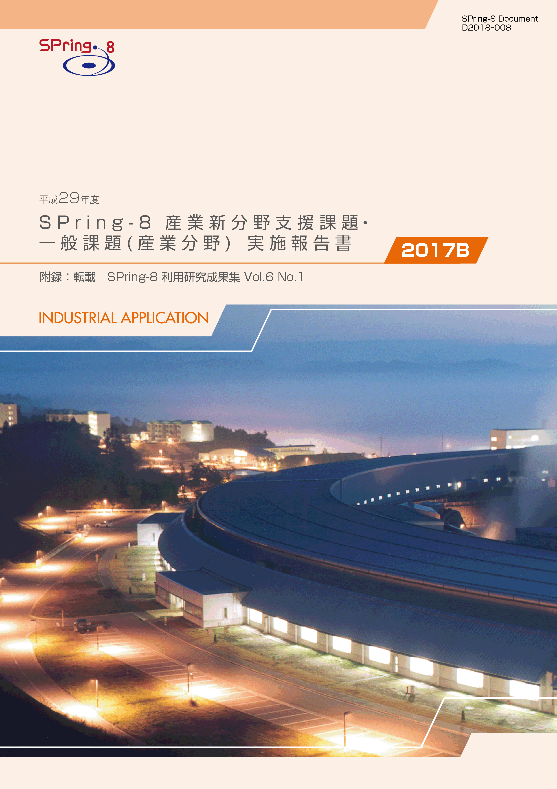
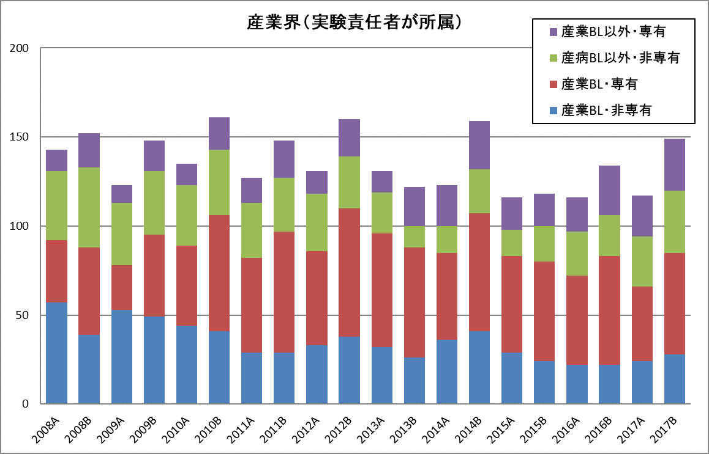

1. はじめに2. 課題募集制度の概要
3. 成果公開の考え方
4. 実施状況
5. 産業利用分野の利用動向と課題
6. 報告書
* 送付を希望される方は、連絡先（氏名、所属、〒住所、E-mail）をご記入の上、 事務局 support@spring8.or.jp までE-mailでご連絡ください。
平成26年度（2014A期）より新たな領域指定型重点課題として、これまで放射光利用が少なかった産業分野のSPring-8利用の拡大を目指して産業新分野支援課題の募集を開始した。本報告書は2017B期の産業利用分野における課題実施状況の報告を目的として、同利用期に実施した一般課題（産業利用分野）と産業新分野支援課題のうちSPring-8利用研究成果集としての審査を行わなかった課題の報告書を収録したものである。
- 一般課題（産業利用分野）
一般課題（産業利用分野）の課題とは、課題申請の際に産業利用分野（I）での課題審査を希望した成果非専有の一般課題（課題審査は課題審査委員会産業利用分科会が行う）である。これまでは一般課題（産業利用分野）への申請は、申請者の所属機関を問わずに認めていたが、2015A期からは実験責任者もしくは共同実験者に民間企業もしくは、それに準じる機関に所属する者が含まれていることを申請要件とした。民間企業に準ずる機関とは、民間企業からの委託による試験・研究・開発を事業に含んでいる機関と定義している。また、地方自治体が設置している公設置試験場や地方独立行政法人等（○○県工業技術センター）は、民間企業に準ずる機関から除外している。なお、民間企業に所属する者が産業利用分野以外の分野に申請した課題は一般課題（産業利用分野）としては扱わない。一般課題（産業利用分野）の募集は他分野の一般課題と同様に、年2回の課題募集期間において全ての共用ビームラインへの申請が可能である。一般課題（産業利用分野）に特徴的な制度は以下の6項目である。
- 産業利用ビームラインI（BL19B2）、II（BL14B2）、III（BL46XU）は半期ごとに前半を1期、後半を2期とした2回の課題募集を行う（年4回課題募集を実施）。1期と2期の両方で利用実験を行いたい場合は、継続的な研究内容の課題であってもその都度、新規課題として応募することが必要である。なお2013A期よりこれらのビームラインでは成果非専有の一般課題は、審査希望分野が産業利用分野である一般課題（産業利用分野）のみとした。これらのビームラインを指定した申請であるものの、審査希望分野が他分野の課題は申請者の希望にかかわらず産業利用分野で審査する。
- 新規利用拡大の観点から課題審査において利用経験を考慮する。
- 民間企業利用拡大の観点から課題審査において所属機関を考慮する。
- 課題実施後約2～4か月以内に所定の書式の産業利用課題実施報告書を提出する。なお、この報告書はSPring-8利用研究成果集として審査を受けることも可能である。
- 全採択課題に担当コーディネーターを配置する。
- 科学技術的妥当性に関する審査は
(1)産業基盤技術としての重要性および発展性
(2)社会的意義および社会経済への寄与度の観点
に重点をおいて実施する。
- 産業新分野支援課題
「産業新分野支援課題」を領域指定型の重点研究課題として、平成25年9月24日に指定した。その狙いは以下のとおりである。
これまでの産業利用促進の取り組みにより、一部の産業分野ではSPring-8の放射光利用が普及した一方、経済のグローバル化を反映して国内の産業構造も大きく変化し、新しい産業の創生をもたらすような研究開発が必要になっている。そこで、新産業分野の研究開発を促進するため、SPring-8で放射光利用に新規に取り組む産業分野の課題に重点的な支援を行う産業新分野支援課題を実施する。
なお、産業新分野支援課題は2017年度までの実施を予定していたため、2017B期が最後の利用期となる。
2-1） 募集の対象
課題の目的に沿って、SPring-8での放射光利用実績の少ない産業分野の研究開発に関する課題を募集の対象とする。該当する産業分野の例として食品･食品加工、農林水産物、建設資材、金属加工、鉱物資源が挙げられるが、この限りではない。例示された分野に該当しない場合は、課題申請の際に放射光利用実績の少ない産業分野であることの説明が求められる。なお、一般課題（産業利用分野）のような実験責任者及び共同実験者の所属機関に関する要件は設定しない。
2-2） 対象ビームライン、シフト数割合、及び募集
産業利用ビームラインI（BL19B2）、II（BL14B2）、III（BL46XU）を対象に、ユーザー実験に供するビームタイムのうち20%以内（施設留保を含めたユーザータイムの16%以内）を配分する。
募集は一般課題と同時期に半期2回行う。なお、1期募集において採択された通期課題の2期分のシフト数も含めた合計シフト数が半期を通じたビームタイムの上限に達した場合は2期に募集を行わない。
2-3） 通期課題
1期、2期の両方で利用実験を行いたい場合は、その都度新規課題としての応募が必要であるが、継続的･計画的な実施により一層の成果創出が期待される課題は、“通期課題”とし1期応募の折に2期分のシフト数も含めた申請を受付ける。なお、2期は通期課題の募集は行わない。
2-4） 審査
一般課題（産業利用分野）に先んじて課題審査委員会産業利用分科会が審査を行う。なお、産業新分野支援課題として不採択となった課題は、自動的に一般課題（産業利用分野）の課題として、他の一般課題と一緒に改めて審査される。産業新分野支援課題においては一般課題（産業利用分野）の観点に加えて研究対象がSPring-8での放射光利用の新規な産業分野に該当するかどうかも含めて審査する。
2-5） 報告
WEBより提出するビームタイム利用報告書、利用実験課題報告書に加えて課題実施後約2～3か月以内に所定の書式の産業新分野課題実施報告書を提出する。なお、この報告書はSPring-8利用研究成果集として審査を受けることも可能である。
成果の公開については、産業新分野支援課題、一般課題（産業利用分野）ともに他の成果非専有の一般課題と同様に学術誌上への論文掲載（博士論文も含む）もしくはSPring-8利用研究成果集への採録による成果公開が求められる。この産業利用課題実施報告書及び産業新分野支援課題実施報告書の提出は成果の公開とは認定されないが、これらの報告書は著者からの申し出によりSPring-8利用研究成果集としての審査を受けることが可能である。SPring-8利用研究成果集としての審査を受けない実施報告書は、JASRIコーディネーター等による校閲を経て課題実施期が終了して約6か月後に出版･公開されるが、それ以外はSPring-8利用研究成果集としての審査終了後に公開される。
なお、平成29年度2017B期の一般課題（産業利用分野）及び産業新分野支援課題の実施報告は、平成31年9月上旬に開催予定の「第16回SPring-8産業利用報告会」等で口頭及びポスター形式での報告を想定している。
以下に平成29年度2017B期の産業新分野支援課題、及び一般課題（産業利用分野）の応募・採択結果を表1、表2にまとめる。
- 応募・採択結果 産業新分野支援課題
表 1．応募時期及び研究機関別課題応募・採択結果募集時期 機関分類 応募数採択数採択率（%）第1期募集学官2150.0産業界11100.0合計3266.7第2期募集学官3133.3産業界2150.0合計5240.0総計8450.0
*採択数には産業新分野支援課題で不採択となり、一般課題として再審査されて採択された3課題(第2期 学官2課題、産業界1課題)を含まない。
産業新分野支援課題の応募数は前年同期の2016B期の約2/3、直前の2017A期並みで2017年はA、B期を通じて応募が少なく、なかでも産業界以外からの申請数減少が顕著であった。なお、2017B第2期は追加募集を行ったところ、通常の募集よりも多い3件の応募があり、年度末に向けて放射光利用の需要が高まることを示す結果となった。また、2017B第2期の追加募集に申請された課題は3件とも産業新分野支援課題に適さないと判断され一般課題で再審査となった。産業新分野支援課題最後の募集となった今期においても、残念ながら一般課題（産業利用分野）に申請された課題の中に産業新分野支援課題としての申請が望ましいと思われる課題が複数あった。その一方で、過去に産業新分野支援課題の実施経験を有する利用者が成果公開優先利用課題の実施があり、産業新分野支援課題が新規分野の利用開拓に有用であったことを示す好例と考えている。
- 応募・採択結果 一般課題（産業利用分野）
表2．応募時期及び研究機関別一般課題応募・採択結果
*応募数と採択数には産業新分野支援課題で不採択となり、一般課題として再審査されて採択された課題(第2期学官2課題、産業界1課題)を含む。また、採択後に12条課題に分類されるJASRI職員から申請された課題を応募数（1期 2課題、2期 5課題）、採択数（1期 2課題、2期 3課題を除く。一般課題と同時に審査される大学院生提案型課題の応募数（1期 6課題、2期 8課題）、採択数（1期 4課題、2期 7課題）を除く。募集時期 機関分類 応募数＊採択数採択率（%）第1期募集 学官382976.3産業界312683.9合計695579.7第2期募集 学官372567.6産業界261557.7合計604066.7総計1299573.6
一般課題（産業利用分野）の応募数課題を2016Bと比較すると第1期は2016B期の約3/4と大幅な減少となった。特に学官による申請の減少が大きく2016B期の2/3以下となった。第2期は29課題追加募集の31課題と併せて全体では60 課題となり2016B期の36課題と比べて大幅な増加となった。2017B期全体を通じての応募数は2016B期とほぼ同じ129課題となった。このことは、課題募集期間を工夫することで、課題申請への需要を喚起できることを示唆するものと考えている。
- SPring-8利用研究成果集としての審査
前記のとおり2011B期より成果公開の扱いが変更になったため、実験責任者の希望に応じて重点産業利用報告書をSPring-8利用研究成果集（現在はSPring-8/SACLA利用研究成果集）として査読審査を受けて公開文書として扱うことも可能とした。産業新分野支援課題及び産業利用分野の一般課題も同様で、SPring-8/SACLA利用研究成果集として審査を受ける公開文書とすることができる。SPring-8/SACLA利用研究成果集への公開は査読審査が終了し成果審査委員会での承認後となるため、SPring-8/SACLA利用研究成果集に投稿予定の課題は採録していない。このため、今回は2017B期の採録対象課題となる95課題のうち、一部の課題は掲載していない。
-
2017B期に実施され全共同利用研究課題857課題のうち、民間企業等の産業界に所属する利用者が実験責任者であった課題は150課題で2016B期の134課題から約10%の増加となった。しかし、2017B期は供給ビームタイムが2016Bよりも約20%増えたことに対応して全実施課題数も増加したことから、産業界が実験責任者である課題の割合は2016B期よりもやや少ない17.5%にとどまった。2017B期に3本の産業利用ビームラインで実施された産業界の課題数は成果専有課題、非専有課題数ともに2016B期とほぼ同数となった一方、産業利用以外のビームラインで実施された成果非専有課題の増加が、産業界課題全体の増加につながった。これは供給ビームタイムが増えたことで産業利用以外のビームラインで採択された課題数の増加につながったものと考えている。
産業利用ビームラインが現在の3本体制になった2008A期以降の産業界課題の実施数推移を図1に示す。2013年を除いて毎年A期よりもB期の方が実施数が多いが、2017年はその傾向が特に顕著で、需要の多いB期にA期よりも多いビームタイムが供給されたためと思われる。なお、2017B第2期に見られたように、応募機会を多くすることによって申請件数も増えたことから2018A.期より半期3回募集を行うなど、今後も産業分野での利便性を高める取り組みを継続的に行ってゆく予定である。

図1. 共同利用実験として実施された産業界課題の実施数推移
附録 SPring-8利用研究成果集 Vol 6 No.1 （https://user.spring8.or.jp/resrep/?cat=27）より転載
2011B1011 |
XAFSによる可視光応答型光触媒の構造解析 | 黒田 靖 | 昭和電工セラミックス株式会社 |
2012B1184 |
HAXPESによるLiFSI添加電解液を用いたリチウムイオン二次電池の電極表面解析 | 平田 和久 | 株式会社日本触媒 |
2013A1533 |
延伸時のナノシリカ充填シリコーンゴムの階層構造解析 | 福谷(野田) 実希 | 住友ベークライト株式会社 |
2013A1816 |
シリカ配合ゴムの時分割X線散乱法によるせん断変形時のゴム内部構造観察 | 三原 諭 | 横浜ゴム株式会社 |
2013B1517 |
硬X線光電子分光による駆動中の有機デバイス素子の解析 | 岡本 薫 | 三菱ケミカル株式会社 |
2013B1709 |
XAFSによるスズおよびコバルトを還元析出した白金触媒の局所構造解析 | 今井 智太 | 神戸大学 |
2014A1520 |
BL14B2における遠隔XAFSシステムの構築(4) | 高垣 昌史 | 公益財団法人高輝度光科学研究センター |
2014A1551 |
SDSが引き起こす角層構造変化に対する多価アルコール添加効果 | 簗瀬 香織 | クラシエホームプロダクツ株式会社 |
2014A1714 |
異なる製造法による硫化物系固体電解質ガラスの構造解析 | 山口 展史 | 出光興産株式会社 |
2014A3723 |
放射光X線回折によるCFRP/Ti積層板のTi層におけるひずみ測定 | 秋田 貢一 | 日本原子力研究開発機構 |
2015A1854 |
バイオマスサンプルにおける元素形態の解析2 | 日良 聡 | 月島機械株式会社 |
2015A1948 |
アイソタクチックポリプロピレン（PP）／熱可塑性エラストマー2成分ブレンド系における熱膨張挙動とPP格子定数及び長周期の温度変化 | 小野 道雄 | ダウ・ケミカル日本株式会社 |
2016A1566 |
固体酸化物形燃料電池用酸化物イオン伝導体のXRD解析 | 岩井 広幸 | 株式会社ノリタケカンパニーリミテド |
2016B1578 |
保湿剤がヒト角層細胞間脂質の構造変化に及ぼす影響の検討(2) | 山田 武 | 阪本薬品工業株式会社 |
2016B1628 |
固体酸化物形燃料電池用酸化物イオン伝導体のXRD解析 | 岩井 広幸 | 株式会社ノリタケカンパニーリミテド |
2016B1862 |
液相界面ボトムアップ法による分離膜向け分子ナノシートの創製と構造解析 | 牧浦 理恵 | 大阪府立大学 大学院工学研究科 |
「平成29年度 SPring-8産業新分野支援課題・一般課題（産業分野）実施報告書（2017B）」送付を希望される方は、 連絡先（氏名,所属,〒住所,E-mail）をご記入の上、事務局 support@spring8.or.jp までE-mailでご連絡ください。